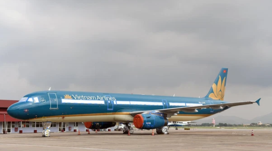

Từ 10/10, Hà Nội thí điểm mở lại đường bay nội địa MINH NHÂN, THEO DOANH NGHIỆP VÀ TIẾP THỊ 19:42 08/10/2021 Chiều 8/10, Phó Thủ tướng Lê Văn Thành chủ trì cuộc họp trực tuyến toàn quốc về việc triển khai phục hồi các chuyến bay thương mại vận chuyển hành khách nội địa trong nước.
KHẨN: Hà Nội tìm người từng đến AEON Mall Hà Đông, VinMart, phòng khám, chợ, xưởng nhôm kính liên quan chùm F0 cộng đồng Chủ tịch Hà Nội nói gì về việc mở lại đường bay nội địa và thời gian học sinh trở lại trường? Cục Hàng không đề nghị mở lại đường bay nội địa: UBND TP. Hà Nội ra văn bản hoả tốc Tại cuộc họp, ông Lê Anh Tuấn, Thứ trưởng Bộ Giao thông vận tải trình bày dự thảo quy định tạm thời về triển khai các đường bay nội địa chở khách thường lệ bảo đảm thích ứng an toàn, linh hoạt, kiểm soát hiệu quả dịch Covid-19. Theo đó, kế hoạch khai thác các chuyến bay được thực hiện thí điểm từ ngày 10/10 đến hết ngày 20/10 với 23 chuyến khứ hồi/ ngày (46 chuyến/ ngày). Bao gồm 10 chuyến khứ hồi từ TP.HCM đi các địa phương, 6 chuyến khứ hồi từ Hà Nội, 4 chuyến khứ hồi từ Đà Nẵng và 3 chuyến khứ hồi từ Thanh Hóa.
